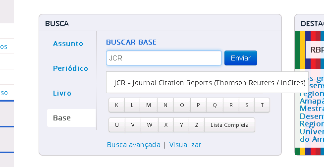
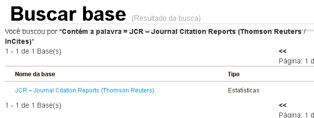
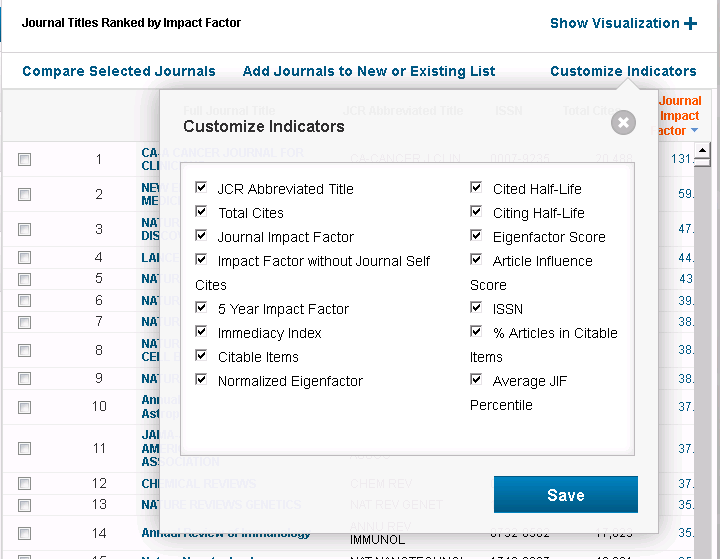
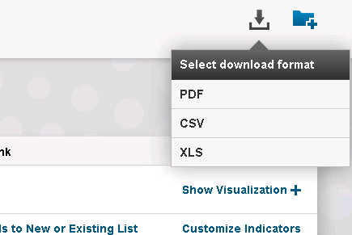

Extrator Lattes CNPq
O conhecimento sobre a produção cientifica de uma instituição de ensino superior possui um papel importante para determinar a qualidade da mesma, assim como responder a oportunidades dadas a mesma seja por editais de licitação ou projetos de pesquisa. Com essas informações é possível determinar os limites e competências da instituição. Uma forma de analisar essas características é através dos currículos de seus profissionais.
Neste repositório está disponibilizado o código fonte da solução desenvolvida para trabalho de conclusão de curso de Bacharelado em Sistemas de Informação da Universidade da Região de Joinville – Univille para coleta dessas informações curriculares dos professionais, usando como base os dados existentes na Plataforma Lattes do CNPq.
Ir para Execução.
Ir para Instalação e Configuração.
Conceito
Para acessar os dados dos currículos, utilizou-se o acesso disponibilizado pelo CNPq via VPN que através de um arquivo em formato XML, permite o consulta das informações dos currículos Lattes dos professores da instituição.
Com base na documentação disponibilizada pelo CNPq, mapeou-se os dados presentes no XML e modelou-se uma base Data Warehouse com os dados dos currículos, porém mais acessível para consulta. Por exemplo, todas as Produções Técnicas foram agrupadas em uma tabela que possui um identificador detalhando se esta produção é uma "Cultivar", "Patente", "Software", etc., o que facilita a leitura dos dados em comparação a estrutura hierárquica do XML. Este tipo de "remodelagem" foi aplicado a praticamente todas as tabelas de modo que a base se tornasse mais performática e legível.
Outra informação importante incluída no Data Warehouse, foi das classificações dos periódicos do Qualis, criando a possibilidade de análise dos artigos gerados pela Instituição.
Com a base modelada e acesso ao serviço do Lattes, foi desenvolvido um programa em C# para se comunicar com o serviço citado. A aplicação busca o currículo dos pesquisadores da IES e transforma os dados do XML para que possam ser gravados na Data Warehouse.
A aplicação ainda avalia as informações das produções científicas e projetos dos professores para que não fiquem duplicadas na base de dados baseando-se no ano, tipo e título das mesmas. Dessa forma, caso dois pesquisadores tenham citado um mesmo projeto ou produção em seus currículos, ao invés de inserir dois registros o programa irá apenas vincular os dois pesquisadores ao um mesmo registro de produção/projeto. Para a produção bibliográfica também é associado qual o extrato Qualis o mesmo está classificado.
Uma vez que os dados estejam carregados no DW utilizou-se a ferramenta de Business Intelligence Tableau, que permite a criação de paneis utilizando a base de dados construída anteriormente. No Tableau foram então criadas consultas e painéis para análise das informações geradas. O arquivo com os painéis gerados pode ser acessado aqui.
A cada execução o extrator verifica se o currículo em questão sofreu alterações desde a última extração e irá carregar apenas os currículos que foram alterados, dessa forma torna a execução incremental e mais performática.
Execução
As atividades executadas pelo Lattes Extractor são definidas pelos parâmetros passados pela linha de comando de execução. Abaixo estão as formas disponíveis
Execução Normal (Sem Parâmetros)
Ao não informar parâmetros pela linha de comando o Lattes Extractor irá executar a extração dos Currículos da Plataforma Lattes conforme os Parâmetros da Aplicação.
Carga dos Extratos de Periódicos Qualis (-q)
Para a carga do Extrato Periódicos Lattes é necessário passar o parâmetro -q e o valor deverá ser o caminho para uma planilha com as informações sobre a Classificação Qualis dos Periódicos. Quando executado dessa forma o extrator irá alimentar e atualizar a classificação dos Periódicos.
Ex.: LattesExtractor.exe -q qualis.csv
Um exemplo de planilha pode ser encontrado em: LattesExtractor/resources/Consulta_Webqualis.csv.
As novas classificações podem ser recuperadas na Plataforma Sucupira na área de consulta de dados para os "Periódicos Qualis" (clique aqui). É importante avisar que a planilha gerada na Plataforma Sucupira precisara ser trabalhada antes do programa conseguir importá-la. Primeiramnete deve ser alterado o formato da mesma de Excel 2007 (.xls) para CSV (*.csv).
E deverá ser alterado para que cada linha tenha apenas uma área de avaliação no caso a linha abaixo:
| ISSN | Título | Área de Avaliação | Estrato |
|---|---|---|---|
| 1980-4814 | ABCustos (São Leopoldo, RS) | ADMINISTRAÇÃO, CIÊNCIAS CONTÁBEIS E TURISMO | B4 |
Deve ficar assim:
| ISSN | Título | Área de Avaliação | Estrato |
|---|---|---|---|
| 1980-4814 | ABCustos (São Leopoldo, RS) | ADMINISTRAÇÃO | B4 |
| 1980-4814 | ABCustos (São Leopoldo, RS) | CIÊNCIAS CONTÁBEIS E TURISMO | B4 |
JCR Impact Factor (-j)
Nesta execução é possível realizar a atualização do JCR Impact Factor dentro da base de consulta, para tanto é necessário usar o parâmetro -j passando como valor o arquivo CSV que é disponibilizado pela Thomson Reuters, abaixo será explicado como exportar esse arquivo e quais são as informações que devem ser exportadas para correta execução do LattesExtractor.
Para executar os passos abaixo é necessário estar dentro da VPN da Capes, do contrário o acesso a base poderá estar limitada e não será possível terminar o processo abaixo.
-
Acesse o Portal de Periódicos da Capes (http://periodicos.capes.gov.br/), na seção de "Base" pesquisar o termo "JCR" e clicar em "Enviar".

-
Nos resultados da pesquisa acessar o link "JCR – Journal Citation Reports (Thomson Reuters)"

-
Será apresentada um painel contendo os dados do JCR, nesta tela é importante utilizar o botão "Customize Indicators" e selecionar todas as opções disponíveis. Caso seja solicato o Login no sistema basta criar um novo registro o mesmo é gratuito.

-
Após o painel ter atualizado usar o botão de Download para exportar os dados em formato CSV. O arquivo exportado pode ser usado diretamente para importação no Lattes Extractor.

Instalação e Configuração
Para execução do extrator é necessário possuir acesso a VPN do CNPq, mais informações sobre como obtê-la é necessário conversar com um representante do CNPq.
Também necessário um servidor de banco de dados para armazenar os dados gerados na extração, o mesmo deverá ser criado utilizando uma estrutura de tabelas que seja compatível com o extrator. No arquivo dblattes_creation_script.sql existe um script T-SQL criando uma base de dados do SQL Server compatível.
O script dblattes_creation_script.sql terá um formato para suportar execuções "incrementais", ou seja, toda a vez que for necessário atualizar o banco de dados o próprio script irá verificar qual a versão sua base esta e aplicar as definições nela.
Existem dois arquivos de configuração, um deles para a extração de dados (App.config) e outro para os logs (LattesExtractor.log4net). Para a configuração sugerimos verificar diretamente com no site do Framework Apache Log4Net que foi utilizado para este fim.
Abaixo seguem as configurações do LattesExtractor:
Parâmetros da Aplicação
TempDir
Informar o diretório temporário onde serão guardados os arquivos XML dos currículos até que sejam lidos
LattesCurriculumVitaeODBCConnection
Linha de conexão ODBC para uma base de onde serão lidos quais são os pesquisadores da instituição.
Essa conexão pode ser feita com uma planilha Excel, por exemplo, usando o Jet.OLEDB, o valor do parâmetro ficaria:
"Provider=Microsoft.Jet.OLEDB.4.0; Data Source=.\resources\IDs_Curriculos.local.xls; Extended Properties='Excel 8.0;HDR=YES;'"
LattesCurriculumVitaeQuery
Query SQL que irá retornar os dados a partir da conexão informada no parâmetro LattesCurriculumVitaeODBCConnection
A lógica do extrator está preparado para tratar 3 formatos de queries e define como lidar com elas de acordo com o número de colunas da query, recomenda-se utilizar a opção 2 para melhor performance.
- 1 Coluna: Entende que esta sendo informado apenas o Número do Currículo Lattes do pesquisador. Ex.:
SELECT [numerolattes] FROM [lattes$] - 2 Colunas: Entende que esta sendo informado o Número do Currículo Lattes e Nome do pesquisador, essa opção auxiliar na leitura do Log de execução. Ex.:
SELECT [numerolattes], [nomeprofessor] FROM [lattes$] - 3 Colunas: O programa entende que são informados o Nome, Data de Nascimento e CPF do pesquisador, usando essa opção o LattesExtrator irá buscar sozinho o Número Lattes do pesquisador e retornar o currículo do mesmo. É uma opção útil caso não sejam conhecidos os números dos currículos do pesquisadores, mas irá tornar a execução um pouco mais lenta. Ex.:
SELECT [nomeprofessor], [datanascimento], [cpf] FROM [ids_lattes$] - 4 Colunas: o programa entende que será informado o Número do Currículo Lattes, Nome, Data de Nascimento e CPF do pesquisador, sendo o número do currículo opcional, essa opção é útil caso tenha apenas partes do números dos currículos, dessa forma realizando uma consulta "mista". Ex.:
SELECT [numerolattes], [nomeprofessor], [datanascimento], [cpf] FROM [ids_lattes$]
Parametrizando WebService CNPq
O CNPq disponibilizou um WebService SOAP que permite consultar os currículos dos pesquisadores e descobrir os Número Lattes dos mesmos. O endereço do mesmo pode mudar no futuro, caso isso aconteça, deve ser alterado essa informação para o WebService "WSCurriculo"
Conexão da Base Data Warehouse
A aplicação esta utilizando o Entity Framework para conexão e manipulação do banco de dados. Para alterar o banco de destino dos dados basta alterar a Connection String de nome LattesDatabase no arquivo App.config.
Hoje o extrator está preparado para usar o SQL Server como banco de dados de destino. Trocar para outro serviço precisará que sejam adicionadas outras bibliotecas fornecidas pelo seu serviço de banco de dados.
Licença e Distribuição
Veja o arquivo LICENSE para verificar os limites e direitos de distribuição e uso (GNU GPL v3).